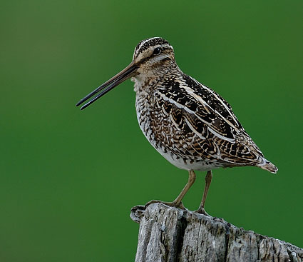
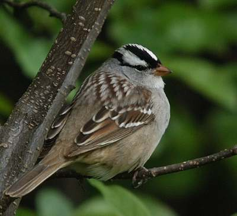
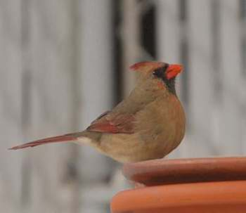
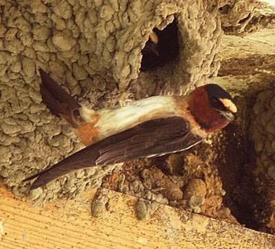
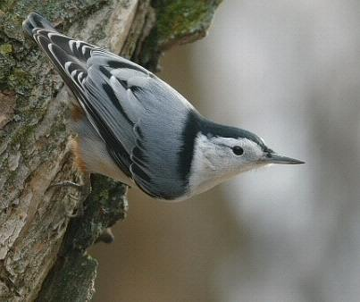

Oiseaux du Jardin Botanique
Bécassine de Wilson

Bernache du Canada

Bruant à couronne blanche

Bruant à gorge blanche

Cardinal rouge (femelle)

Chardonneret jaune

Corneille d'Amérique

Dindon sauvage

Épervier de Cooper

Étourneau sansonnet

Geai bleu

Grand corbeau

Grand-duc d'Amérique

Grèbe à bec bigarré

Hirondelle à front blanc

Junco ardoisé

Merle d'Amérique

Mésange à tête noire

Pic chevelu

Pic mineur

Roselin familier

Sittelle à poitrine blanche

Sittelle à poitrine rousse

Tyran tritri